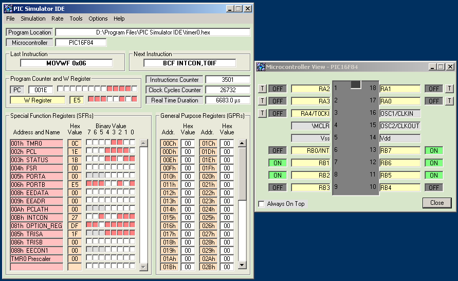

PIC Simulator IDE Getting Started Page
There are eleven examples bundled with PIC Simulator IDE. They are located in application folder. This is short step by step guide for the beginners that will help them to test these examples and in that way explore the most important features of PIC Simulator IDE.
Example 1: Timer0 module simulation, TMR0 interrupts
Example 2: RB0/INT external interrupts
Example 3: EEPROM data memory access simulation
Example 4: Math multiply routine, demonstration of compiler, assembler and debugger
Example 5: A/D module simulation
Example 6: Comparator and voltage reference modules simualtion
Example 7: LCD module simulation
Example 8: Hardware UART module simulation
Example 9: Software UART simulation interface
Example 10: 7-segment LED displays simulation
Example 11: Signal generator and oscilloscope simulation modules
EXAMPLE 1
- Examine timer0.bas file from the application folder. This Basic program uses Timer0 module interrupts to periodically change the value on PORTB pins. File timer0.asm was generated using integrated Basic compiler. File timer0.hex was generated using integrated assembler.
TRISB = 0x00 'set all PORTB pins as outputs
PORTB = %11111111 'make all PORTB pins high
INTCON.T0IE = 1 'enable Timer0 interrupts
INTCON.GIE = True 'enable all un-masked interrupts
OPTION_REG.T0CS = False 'set Timer0 clock source to internal instruction cycle clock
End
On Interrupt 'interrupt routine
PORTB = PORTB - 1 'decrement the value on PORTB
INTCON.T0IF = 0 'enable new TMR0 interrupts
Resume
- Start PIC Simulator IDE.
- Click on Options\Select Microcontroller.
- Select 'PIC16F84' and click on Select button.
- Click on File\Load Program.
- Select timer0.hex file and click on Open. That will load the program into PIC program memory.
- Click on Tools\Microcontroller View. That will open the Microcontroller View window.
- Reposition the windows on the screen to get better view.
- Select the Rate\Extremely Fast simulation rate.
- Click on Simulation\Start. The simulation will start immediately.
- This Basic program uses Timer0 module interrupts to periodically change the value on PORTB pins.
- The simulation can be stopped any time by clicking on Simulation\Stop.
Note: If you would like to compile this example for some other PIC microcontroller model, it might be necessary to change T0IE and T0IF bit names to TMR0IE and TMR0IF. You should check in the datasheet of the model you want to use what are the correct bit names for INTCON register.
- Screenshot: view

EXAMPLE 2
- Examine rb0int.bas file from the application folder. This Basic program uses RB0/INT pin based interrupts to change the value on PORTA. File rb0int.asm was generated using integrated Basic compiler. File rb0int.hex was generated using integrated assembler.
TRISA = 0x00 'set all PORTA pins as outputs
PORTA = 0xff 'make all PORTA pins high
INTCON.INTE = 1 'enable RB0/INT interrupts
INTCON.GIE = 1 'enable all un-masked interrupts
End
On Interrupt 'interrupt routine
PORTA = PORTA - 1 'decrement the value on PORTA
INTCON.INTF = 0 'enable new RB0/INT interrupts
Resume
- Start PIC Simulator IDE.
- Click on Options\Select Microcontroller.
- Select 'PIC16F84' and click on Select button.
- Click on File\Load Program.
- Select rb0int.hex file and click on Open. That will load the program into PIC program memory.
- Click on Tools\Microcontroller View. That will open the Microcontroller View window.
- Reposition the windows on the screen to get better view.
- Select the Rate\Extremely Fast simulation rate.
- Click on Simulation\Start. The simulation will start immediately.
- This Basic program uses RB0/INT pin based interrupts to change the value on PORTA.
- Clicking on T button associated with RB0/INT pin will keep toggling the logical state of this pin. Interrupts will be triggered on the rising edge of the pulses. Every time the value on PORTA will be changed.
- The simulation can be stopped any time by clicking on Simulation\Stop.
- Screenshot: view
EXAMPLE 3
- Examine eeprom.bas file from the application folder. This example fills the whole data EEPROM memory and the enters an infinite loop. File eeprom.asm was generated using integrated Basic compiler. File eeprom.hex was generated using integrated assembler.
Dim a As Byte 'eeprom address
Dim b As Byte 'eeprom data
For a = 0 To 63 'go through whole eeprom memory
b = 255 - a 'set the data value to be written
Write a, b 'perform the writing to eeprom
Next a
- Start PIC Simulator IDE.
- Click on Options\Select Microcontroller.
- Select 'PIC16F84' and click on Select button.
- Click on File\Load Program.
- Select eeprom.hex file and click on Open. That will load the program into PIC program memory.
- Click on Tools\EEPROM Memory Editor. That will open the EEPROM Memory Editor window.
- Reposition the windows on the screen to get better view.
- Click on Options\Change EEPROM Write Time. Enter 100 for the new value and click on OK. You should be very cautious when choosing this value, because the realistic value is about 20000 clock cycles at 4 MHz. In this simple example we will use short value, because it can not affect the functionality of the program, but can significantly decrease simulation execution time.
- Select the Rate\Extremely Fast simulation rate.
- Click on Options\Infinite Loop Stops Simulation to select that option.
- Click on Simulation\Start. The simulation will start immediately.
- This example fills the whole data EEPROM memory and the enters an infinite loop.
- Upon detection of the infinite loop the simulator will automatically stop the simulation.
- Screenshot: view
EXAMPLE 4
- Examine multiply.bas file from the application folder. This example will multiply two numbers 123 (hex 7B) and 234 (hex EA) and get the result 28782 (hex 706E). File multiply.asm was generated using integrated Basic compiler. File multiply.hex was generated using integrated assembler.
Dim a As Word 'first number
Dim b As Word 'second number
Dim x As Word 'result
a = 123 'set first number
b = 234 'set second number
x = a * b 'calculate result
- Start PIC Simulator IDE.
- Click on Options\Select Microcontroller.
- Select 'PIC16F84' and click on Select button.
- Click on Tools\BASIC Compiler
- Click on File\Open
- Select multiply.bas file and click on Open. The basic source program will be displayed in the editor.
- Click on Tools\Compile. The compiler will generate multiply.asm file with assembler source and display RAM Memory Usage window. Click on Close to close it.
- Close BASIC Compiler window.
- Click on Tools\Assembler
- Click on File\Open
- Select multiply.asm file and click on Open. The assembler source program will be displayed in the editor.
- Click on Tools\Assemble. After the operation is completed the assembler will generate two files: multiply.lst and multiply.hex. The output file multiply.lst will be displayed.
- Close Assembler window.
- Click on File\Load Program.
- Select multiply.hex file and click on Open. That will load the program into PIC program memory.
- Click on Tools\Breakpoints Manager. That will open the Breakpoints Manager window.
- Click on Yes to use existing assembler listing file.
- Reposition the windows on the screen to get better view.
- Click on the line corresponding to 0017 address to define the breakpoint on this instruction (L0002: GOTO L0002).
- Select the Hold PC In Focus option
- Select the Rate\Extremely Fast simulation rate.
- Click on Simulation\Start. The simulation will start immediately.
- When this mathematical routine is finished the program enters the infinite loop at the address 0017, but because of the breakpoint, the simulator will automatically switch to Step By Step simulation rate.
- You can stop the simulation now by clicking on Simulation\Stop or continue the execution by clearing the defined breakpoint and clicking on Rate\Extremely Fast.
- General purpose register pair (19H-18H) will hold the first argument 007B.
- GPR pair (1BH-1AH) will hold the second argument 00EA.
- The result 706E will reside in (1DH-1CH) register pair.
- Screenshot: view
EXAMPLE 5
- Examine adc.bas file from the application folder. This program reads analog value on AN0 analog input and displays 8-bit conversion result on PORTB. File adc.asm was generated using integrated Basic compiler. File adc.hex was generated using integrated assembler.
Symbol ad_action = ADCON0.GO_DONE 'set new name for A/D conversion start bit
Symbol display = PORTB 'set new name for PORTB used to display the conversion result
TRISB = %00000000 'set PORTB pins as outputs
TRISA = %111111 'set PORTA pins as inputs
ADCON0 = 0xc0 'set A/D conversion clock to internal source
ADCON1 = 0 'set PORTA pins as analog inputs
High ADCON0.ADON 'turn on A/D converter module
main:
Gosub getadresult 'go to conversion routine
display = ADRESH 'display the result of the conversion
Goto main 'repeat forever
End
getadresult: 'conversion routine
High ad_action 'start the conversion
While ad_action 'wait until conversion is completed
Wend
Return
- Start PIC Simulator IDE.
- Click on Options\Select Microcontroller.
- Select 'PIC16F877' and click on Select button.
- Click on File\Load Program.
- Select adc.hex file and click on Open. That will load the program into PIC program memory.
- Click on Tools\Microcontroller View. That will open the Microcontroller View window.
- Reposition the windows on the screen to get better view.
- Select the Rate\Extremely Fast simulation rate.
- Click on Simulation\Start. The simulation will start immediately.
- Click on A button associated with RA0/AN0 pin.
- Using the slider change the analog value on this pin and click on Accept button.
- Watch how this change affect the state on PORTB pins.
- The last three steps can be repeated.
- The simulation can be stopped any time by clicking on Simulation\Stop.
- Screenshot: view
EXAMPLE 6
- Examine comp.bas file from the application folder. This example uses analog comparator module to detect the state of AN0 and AN1 analog inputs in regard to 2.5V reference voltage generated by internal module. File comp.asm was generated using integrated Basic compiler. File comp.hex was generated using integrated assembler.
Symbol comp_change = PIR1.CMIF 'comparator interrupt flag
CMCON = 0x06 'set comparator mode to two common reference comparators with outputs
TRISA = 0x07 'set RA0, RA1 and RA2 as inputs, other PORTA pins as outputs
VRCON = 0xec 'turn on, configure voltage reference module for 2.5V and connect it to RA2
TRISB = 0x00 'set PORTB pins as outputs
loop1:
While Not comp_change 'wait for comparator output change
Wend
PORTB = CMCON 'display CMCON register on PORTB pins, RB6 and RB7 are comparator outputs
comp_change = 0 'reset comparator interrupt flag
Goto loop1 'repeat forever
- Start PIC Simulator IDE.
- Click on Options\Select Microcontroller.
- Select 'PIC16F628' and click on Select button.
- Click on File\Load Program.
- Select comp.hex file and click on Open. That will load the program into PIC program memory.
- Click on Options\Use Voltage for Analog Inputs to select this option.
- Click on Tools\Microcontroller View. That will open the Microcontroller View window.
- Reposition the windows on the screen to get better view.
- Select the Rate\Extremely Fast simulation rate.
- Click on Simulation\Start. The simulation will start immediately.
- Click on A button associated with AN0 or AN1 pin.
- Using the slider change the analog value on that pin and click on Accept button.
- Watch how this change affect the state on PORTA and PORTB pins.
- The last three steps can be repeated.
- The simulation can be stopped any time by clicking on Simulation\Stop.
- Screenshot: view
EXAMPLE 7
- Examine lcd.bas file from the application folder. This program reads analog value on AN0 analog input and displays formatted output on the attached 2x16 LCD module. File lcd.asm was generated using integrated Basic compiler. File lcd.hex was generated using integrated assembler.
Define ADC_CLOCK = 3 'default value is 3
Define ADC_SAMPLEUS = 10 'default value is 20
Define LCD_BITS = 8 'allowed values are 4 and 8 - the number of data interface lines
Define LCD_DREG = PORTB
Define LCD_DBIT = 0 '0 or 4 for 4-bit interface, ignored for 8-bit interface
Define LCD_RSREG = PORTD
Define LCD_RSBIT = 1
Define LCD_EREG = PORTD
Define LCD_EBIT = 3
Define LCD_RWREG = PORTD 'set to 0 if not used, 0 is default
Define LCD_RWBIT = 2 'set to 0 if not used, 0 is default
Define LCD_COMMANDUS = 2000 'delay after LCDCMDOUT, default value is 5000
Define LCD_DATAUS = 50 'delay after LCDOUT, default value is 100
Define LCD_INITMS = 2 'delay used by LCDINIT, default value is 100
'the last three Define directives set the values suitable for simulation; they should be omitted for a real device
Dim an0 As Word
TRISA = 0xff 'set all PORTA pins as inputs
ADCON1 = 0 'set all PORTA pins as analog inputs
Lcdinit 1 'initialize LCD module; cursor is blinking
loop:
Adcin 0, an0
Lcdcmdout LcdClear 'clear LCD display
Lcdout "Analog input AN0" 'text for the line 1
Lcdcmdout LcdLine2Home 'set cursor at the beginning of line 2
Lcdout "Value: ", #an0 'formatted text for line 2
WaitMs 1 'larger value should be used in real device
Goto loop 'loop forever
- Start PIC Simulator IDE.
- Click on Options\Select Microcontroller.
- Select 'PIC16F877' and click on Select button.
- Click on File\Load Program.
- Select lcd.hex file and click on Open. That will load the program into PIC program memory.
- Click on Tools\Microcontroller View. That will open the Microcontroller View window.
- Click on Tools\LCD Module. Click on Yes for the LCD Module to load the setup parameters from the basic program. That will open the LCD Module simulator window. (Note: LCD Module parameters can be setup manually using Setup command.)
- Reposition the windows on the screen to get better view.
- Select the Rate\Extremely Fast simulation rate.
- Click on Simulation\Start. The simulation will start immediately.
- Click on A button associated with RA0/AN0 pin.
- Using the slider change the analog value on this pin and click on Accept button.
- Watch how this change affect the LCD Module.
- The last three steps can be repeated.
- The simulation can be stopped any time by clicking on Simulation\Stop.
Note: At the beginning of this simulation you will need to be patient, because LCD initialization sequence will take about 10ms of real time. Watch Real Time Duration field.
- Screenshot: view
EXAMPLE 8
- Examine uart.bas file from the application folder. This program first sends 6 lines of formatted output to hardware UART serial port and then responds to the bytes received on that serial port by sending one line of formatted text for every received byte. File uart.asm was generated using integrated Basic compiler. File uart.hex was generated using integrated assembler.
Dim i As Byte 'declare a variable
Hseropen 9600 'open hardware uart port for baud rate 9600
'WaitMs 1000 'this delay should be used in a real device
For i = 10 To 5 Step -1 'for-next loop
Hserout "Number: ", #i, CrLf 'send formatted output to serial port
'WaitMs 500 'this delay should be used in a real device
Next i
loop:
Hserin i 'wait to receive a byte on serial port
Hserout "Number: ", #i, CrLf 'send formatted output to serial port
Goto loop 'loop forever
- Start PIC Simulator IDE.
- Click on Options\Select Microcontroller.
- Select 'PIC16F877' and click on Select button.
- Click on Options\Change Clock Frequency.
- Enter '4' and click on OK button.
- Click on Options\Change UART Transmit/Receive Time.
- Enter '100' and click on OK button.
- Click on File\Load Program.
- Select uart.hex file and click on Open. That will load the program into PIC program memory.
- Click on Tools\Hardware UART Simulation Interface. That will open the window for interfacing hardware UART during the simulation.
- Reposition the windows on the screen to get better view.
- Select the Rate\Extremely Fast simulation rate.
- Click on Simulation\Start. The simulation will start immediately.
- Wait until the program has finished sending 6 lines of formatted text to the serial port.
- Using one of three available buttons in the UART Input section of the UART interface send a byte to the serial port.
- Watch how program responds by sending one line of formatted output.
- The last two steps can be repeated.
- The simulation can be stopped any time by clicking on Simulation\Stop.
- Screenshot: view
EXAMPLE 9
- Examine softuart.bas file from the application folder. This program first sends 6 lines of formatted output to software UART serial port (TX line: PORTB.1) and then responds to the bytes received on that serial port (RX line: PORTB.2) by sending one line of formatted text for every received byte. File softuart.asm was generated using integrated Basic compiler. File softuart.hex was generated using integrated assembler.
Define SEROUT_DELAYUS = 500
Dim i As Byte 'declare a variable
'WaitMs 1000 'this delay should be used in a real device
For i = 10 To 5 Step -1 'for-next loop
Serout PORTB.1, 9600, "Number: ", #i, CrLf 'send formatted output to PORTB.1 (TX line of software UART)
'WaitMs 500 'this delay should be used in a real device
Next i
loop:
Serin PORTB.2, 9600, i 'wait to receive a byte on PORTB.2 (RX line of software UART)
Serout PORTB.1, 9600, "Number: ", #i, CrLf 'send formatted output to serial port
Goto loop 'loop forever
- Start PIC Simulator IDE.
- Click on Options\Select Microcontroller.
- Select 'PIC16F84' and click on Select button.
- Click on Options\Change Clock Frequency.
- Enter '4' and click on OK button.
- Click on File\Load Program.
- Select softuart.hex file and click on Open. That will load the program into PIC program memory.
- Click on Tools\Software UART Simulation Interface. That will open the window for interfacing software UART during the simulation.
- Default settings should be set: RX Line ---> PORTB.2, TX Line ---> PORTB.1, Baud Rate ---> 9600, Logic Levels ---> Standard. If not, using commands from Settings menu make the necessary changes.
- Click on Options\Compact Microcontroller View to select it.
- Click on Tools\Microcontroller View. That will open the Microcontroller View window.
- Reposition the windows on the screen to get better view.
- Select the Rate\Ultimate (No Refresh) simulation rate.
- Click on Simulation\Start. The simulation will start immediately.
- Wait until the program has finished sending 6 lines of formatted text to the serial port. Pay attention to the state of PORTB.1 pin on the Microcontroller View window.
- Using one of three available buttons in the UART Input section of the UART interface send a byte to the serial port. Pay attention to the state of PORTB.2 pin on the Microcontroller View window.
- Watch how program responds by sending one line of formatted output.
- The last two steps can be repeated.
- The simulation can be stopped any time by clicking on Simulation\Stop.
- Screenshot: view

EXAMPLE 10
- Examine 7segment.bas file from the application folder. This program displays numbers from 0 to 99 on the two 7-segment LED displays with parallel connection and two enable lines using TMR0 interrupt multiplexing procedure. File 7segment.asm was generated using integrated Basic compiler. File 7segment.hex was generated using integrated assembler.
Dim digit As Byte 'input variable for GETMASK subroutine
Dim digit1 As Byte 'current high digit
Dim digit2 As Byte 'current low digit
Dim mask As Byte 'output variable from GETMASK subroutine
Dim mask1 As Byte 'current high digit mask
Dim mask2 As Byte 'current low digit mask
Dim i As Byte
Dim phase As Bit
Symbol d1enable = PORTC.0 'enable line for higher 7-segment display
Symbol d2enable = PORTC.1 'enable line for lower 7-segment display
TRISB = %00000000 'set PORTB pins as outputs
TRISC.0 = 0 'set RC0 pin as output
TRISC.1 = 0 'set RC1 pin as output
d1enable = False
d2enable = False
mask1 = 0
mask2 = 0
phase = 0
INTCON.T0IE = 1 'enable Timer0 interrupts
INTCON.GIE = 1 'enable all un-masked interrupts
OPTION_REG.T0CS = 0 'set Timer0 clock source to internal instruction cycle clock
loop:
For i = 0 To 99
digit1 = i / 10 'get current high digit
digit2 = i Mod 10 'get current low digit
TMR0 = 0 'reset Timer0 to prevent its interrupt before both masks are determined
digit = digit1
Gosub getmask 'get mask for high digit
mask1 = mask
digit = digit2
Gosub getmask 'get mask for low digit
mask2 = mask
Gosub show1 'display new mask
Gosub show2 'display new mask
WaitUs 500 'delay interval suitable for simulation
'use large delay for the real device, say WAITMS 500
Next i
Goto loop
End
On Interrupt 'Timer0 interrupt routine
'continuously switch between high and low digit displays
If phase = 0 Then
phase = 1
Gosub show1
Else
phase = 0
Gosub show2
Endif
INTCON.T0IF = 0 'enable new TMR0 interrupts
Resume
getmask: 'get appropriate 7-segment mask for input digit
mask = LookUp(0x3f, 0x06, 0x5b, 0x4f, 0x66, 0x6d, 0x7d, 0x07, 0x7f, 0x6f), digit
Return
show1: 'show high digit on its display
d2enable = False
PORTB = mask1
d1enable = True
Return
show2: 'show low digit on its display
d1enable = False
PORTB = mask2
d2enable = True
Return
- Start PIC Simulator IDE.
- Click on Options\Select Microcontroller.
- Select 'PIC16F877' and click on Select button.
- Click on Options\Change Clock Frequency.
- Enter '4' and click on OK button.
- Click on File\Load Program.
- Select 7segment.hex file and click on Open. That will load the program into PIC program memory.
- Click on Tools\7-Segment LED Displays Panel. That will open the window with four 7-segment displays.
- Click on Setup button below the display number 2.
- Click twice on the orange field next to the Display Enable label to select pin that will be used to enable/disable this display.
- Select PORTC.0 and then click on Select.
- Click on Setup button below the display number 1.
- Click twice on the orange field next to the Display Enable label to select pin that will be used to enable/disable this display.
- Select PORTC.1 and then click on Select.
- Click on the Hide Setup button to save some screen space.
- Reposition the windows on the screen to get better view.
- Select the Rate\Ultimate (No Refresh) simulation rate.
- Click on Simulation\Start. The simulation will start immediately.
- The program will display numbers from 0 to 99 on the two 7-segment LED displays using TMR0 interrupt multiplexing procedure.
- Experiment with the Keep Last Display option.
- The simulation can be stopped any time by clicking on Simulation\Stop.
- Screenshot: view
EXAMPLE 11
- Examine i2c.bas file from the application folder. This routine programs the first 32 locations in the external serial EEPROM device using I2C communication protocol. In this example it is used to demonstrate oscilloscope and signal generator simulation modules. File i2c.asm was generated using integrated Basic compiler. File i2c.hex was generated using integrated assembler.
Dim addr As Word 'variable for storing EEPROM byte address
Dim data As Byte 'variable for storing EEPROM byte data
Symbol sda = PORTC.2 'nickname for SDA pin
Symbol scl = PORTC.3 'nickname for SCL pin
For addr = 0 To 31 'the first 32 bytes will be written
data = 255 - addr 'set the data byte to be written
I2CWrite sda, scl, 0xa0, addr, data 'perform I2C write operation to serial EEPROM
WaitMs 1 'small delay interval
Next addr
- Start PIC Simulator IDE.
- Click on Options\Select Microcontroller.
- Select 'PIC16F877' and click on Select button.
- Click on Options\Change Clock Frequency.
- Enter '4' and click on OK button.
- Click on File\Load Program.
- Select i2c.hex file and click on Open. That will load the program into PIC program memory.
- Click on Tools\Oscilloscope. That will open the four channel digital oscilloscope window.
- Click on Settings\Turn On/Off Oscilloscope Channel 1.
- Select PORTC.2 and then click on Select.
- Select Pull-up option for channel 1 pin.
- Click on Settings\Turn On/Off Oscilloscope Channel 2.
- Select PORTC.3 and then click on Select.
- Select Pull-up option for channel 2 pin.
- Click on Settings\Turn On/Off Oscilloscope Channel 3.
- Select PORTB.0 and then click on Select.
- Click on Settings\Turn On/Off Oscilloscope Channel 4.
- Select PORTB.1 and then click on Select.
- Click on Tools\Signal Generator. That will open the four channel continuous pulses generator.
- Click on Settings\Turn On/Off Signal Generator 1.
- Select PORTB.0 and then click on Select.
- Enter 500 to define period for channel 1 pulses and then click on OK.
- Enter 25 to define duty cycle for channel 1 pulses and then click on OK.
- Click on Settings\Turn On/Off Signal Generator 2.
- Select PORTB.1 and then click on Select.
- Enter 1000 to define period for channel 2 pulses and then click on OK.
- Enter 50 to define duty cycle for channel 2 pulses and then click on OK.
- Click on Tools\Microcontroller View. That will open the Microcontroller View window.
- Reposition the windows on the screen to get better view.
- Select the Rate\Extremely Fast simulation rate.
- Click on Simulation\Start. The simulation will start immediately.
- I2C communication can be observed on the oscilloscope module as well as the pulses generated by the signal generator.
- The simulation can be stopped any time by clicking on Simulation\Stop.
- Screenshot: view